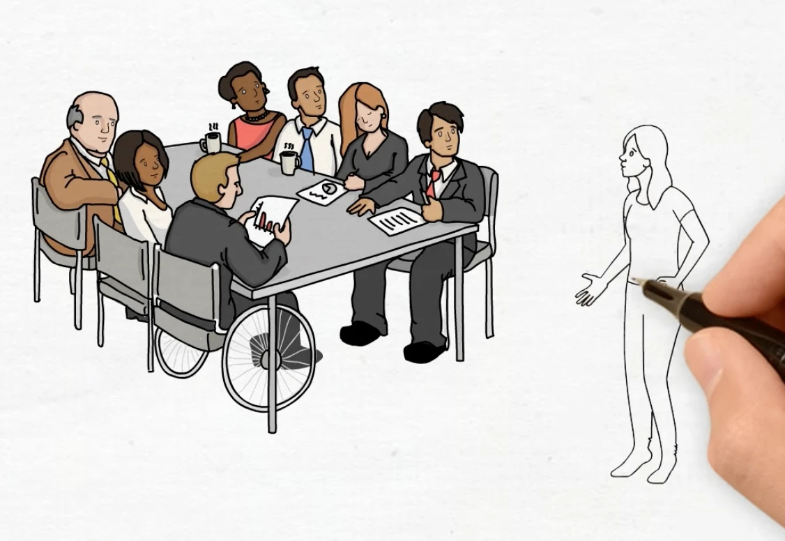
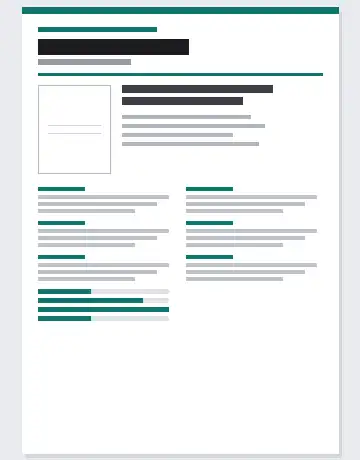
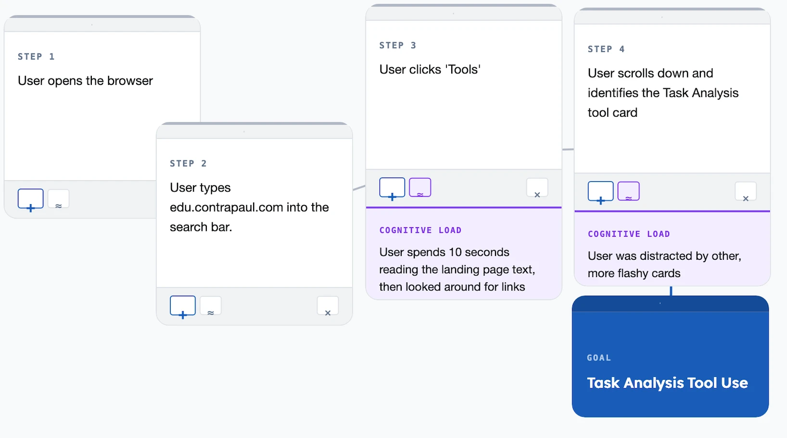

Every designer's first instinct is to design for themselves, because you are the user you understand best and the only one available at all hours. User-centred design is the discipline of not doing that. It is a set of habits for staying honest about who you are actually solving a problem for, and it is probably the most transferable thing this course will teach you.
Where A2.1 introduced the methods, B1.1 is about running them on purpose. You plan an inquiry, choose the right method for the question you actually have, and turn the mess of what people told you into personae, usability objectives and task analyses you can design against. This is the closest thing in the syllabus to a walkthrough of your IA, so treat these as tools you will use rather than terms you will describe. One warning worth giving early: research that only confirms what you had already decided to build is not research, and examiners can tell.
Students must be able toConstruct a plan for a UCD process based on research questions that engage with user-Centred research methods.
User-Centred design (UCD) is a design process that builds every decision around the real needs, behaviours and limits of the people who will use the product, not around the designer's assumptions.
Before you can research your users, you need a plan. A UCD research plan is a short written document that answers three questions: What do I need to find out? How will I find it out? What will I do with the findings?
Your plan begins with research questions: specific things you don't yet know about your users. Good research questions are about people's problems, habits and motivations. Weak research questions ask about product features. Compare:
Weak: "What features should the app have?"
Better: "What step in the current checkout process causes users to abandon their cart?"
Once you have your questions, choose methods that can actually answer them (more on methods in 1.1.2). Then decide how many participants you need and how you will record what they tell you. Finally, set a timeline you can realistically meet.
7-Step UCD Research Plan
- Define the design context: Who is the product for? What problem does it address?
- Identify your target user group(s): Who experiences this problem most acutely?
- Write 3–5 specific research questions: Focus on behaviour, frustration and motivation.
- Choose 2–3 research methods: Match each method to the questions it can answer best.
- Plan your sample: How many participants? How will you recruit them?
- Decide how you will record and organise data: Notes, recordings, observation logs?
- Set a timeline: When will research be complete? When will you start designing?
Each product below presents a different kind of design challenge. Read the context, then study how the inquiry strategy would be structured differently in each case. Notice how the choice of research methods follows directly from the nature of the users and the decisions that need to be made.
- Observe the lift lobby during class transitions to map actual usage patterns
- Interview students with mobility needs and staff who use it daily with equipment
- Survey the broader community on signage clarity and door timing
- Conduct task analysis of the full journey for a wheelchair user, from ground floor to classroom
- Analyse existing usage data to identify where users hesitate or drop off
- Run separate unstructured interviews with power users and casual users.
- A/B test two navigation prototypes with a live subset of real users
- Hold a focus group with content creators, who have the highest stake in how navigation changes affect reach
- Conduct field research at gyms, running events and recreational sports clubs
- Run structured taste-testing sessions with Likert scales on sweetness, aftertaste and colour preference
- Interview recreational athletes about when, where and why they select a sports drink.
- Use a focus group to test packaging and branding concepts against competitor products on a shelf mock-up
- Observe professionals using drills on active construction sites.
- Conduct structured interviews with tradespeople and DIY users separately, using the same questions to expose divergent priorities
- Apply task analysis to the bit-changing process, which preliminary research suggests is a shared pain point
- Ergonomic assessment: measure grip force range, one-handed operation and balance point across percentile hand sizes
Students must be able toApply a variety of user-centred research methods (field research, user observation, interviews, questionnaires and focus groups) and analyse data to establish users' characteristics, behaviours, and the wants and needs of the target population defined by their demographics.
Different research methods collect different kinds of information. The choice of method should be driven by your research questions, not by what is easiest to set up.
Field research: Observe users in their real environment (a kitchen, a bus, a hospital). Reveals the gap between what users say they do and what they actually do. Prone to the observer effect: people may behave differently when they know they're being watched.
User observation: Watch a participant perform a specific task. Can be in a lab or real setting. Good for spotting hesitation, workarounds and errors that users wouldn't think to mention.
Interviews: A structured interview uses the same fixed questions for every participant, making results easy to compare. An unstructured interview follows the conversation wherever it leads, uncovering unexpected insights but producing harder-to-analyse data. Most real research uses a semi-structured format.
Questionnaires: Reach many people quickly. A Likert scale (typically 1–5, from Strongly Disagree to Strongly Agree) turns attitudes into numbers, giving you quantitative data. The scale is named after the American social psychologist Rensis Likert, who developed it in 1932 to measure attitudes and opinions. Always include a few open-ended questions alongside the Likert items, because those capture the qualitative data that explains the numbers.
{kind=link}

Focus groups: A small group, usually no more than 8 to 12 people, discusses a topic together under a facilitator. Useful for exploring social attitudes and generating ideas, and particularly useful early in a project. Risk: one dominant voice can skew the group's responses, and a group that small may not surface every usability issue.
The facilitator is doing real work throughout, not just listening. Their duties are to introduce the topic, keep the discussion moving when it stalls, make sure every participant gets a chance to speak, and steer the conversation back on topic without shutting down the interaction between participants.
The method of extremes designs for the ends of the user population rather than the average. Instead of asking what the typical user can do, you ask what the largest and the smallest user need, then design so that both are accommodated. The mean is used alongside these two limits.
The convention is to apply each extreme where it does the most good. Doorways, ladders, step heights and escape hatches are sized on the 95th percentile of males, because clearance has to work for the largest user. The force required to operate a control button is set by the 5th percentile of females, because if the weakest user can press it, everyone can. Together these choices accommodate the largest possible number of people.
By its nature, this approach still excludes anyone falling beyond the extremes that were chosen. That is why designing for extreme users often means prioritising people with disabilities, whose needs sit outside the able-bodied range entirely. Doing so reliably produces better designs for everyone, and it is the point where the method of extremes shades into universal design, which aims for products usable by all people without adaptation.
The observer effect describes how people change their behaviour simply because they know they are being watched. A worker who normally rushes through a safety check may suddenly follow every step correctly while a researcher is present, then revert to old habits once the researcher leaves. This makes field research and observation harder to interpret than they first appear: the data collected is a mixture of normal behaviour and watched behaviour, and separating the two is rarely straightforward.
This connects to the research planning covered in A2.1 User-centred Research Methods: a strong research plan anticipates the observer effect in advance rather than discovering it after the data has already been collected.
- Extend the session: behaviour often normalises after the first 10–15 minutes of being watched, once the novelty of being observed fades.
- Use passive data sources: app analytics, sensor logs and CCTV-style observation avoid the participant being aware of the observation at all.
- Triangulate: compare what was observed against a separate questionnaire or interview to check whether the two sources agree.
| Method | Best for finding… | Main weakness |
|---|---|---|
| Field research | What users actually do (not what they say) | Time-consuming; observer effect |
| User observation | Specific errors, hesitation points, workarounds | Artificial setting may not reflect real use |
| Structured interview | Consistent, comparable answers across many people | Rigid questions miss unexpected issues |
| Unstructured interview | Deep, unexpected insights | Hard to analyse; small sample only |
| Questionnaire / Likert | Quantitative satisfaction or attitude scores | Doesn't explain why |
| Focus group | Group opinions, social dynamics, idea generation | One dominant voice can skew results |
A single project typically combines 2–3 methods. Field research or observation uncovers what problems exist; interviews and questionnaires explain why and how many people are affected.
Press the button to receive a field research assignment. Each assignment gives you a specific real-world setting, something to observe, and instructions for data to collect. Treat it as a genuine brief.
Type your focus group topic, then generate facilitator questions. Your topic is inserted into each question automatically. Press "New set" to get a different selection of six questions.
Answer the five usability questions as if you are a typical user. Then click "Get survey results" to see how 1,000 "simulated" respondents responded to the same questions.
Students must be able toCreate a primary persona or personae based on user-centred research to aid design development.
A persona is a fictional but research-based character who represents a real user group. You build one from patterns found in your research, not from your own imagination or assumptions about users.
There are three types:
Primary persona: The main user the design is built for. If your design does not fully satisfy this person, it fails. You design for one primary persona first; everything else is secondary.
Secondary persona: An additional user with needs beyond the primary. Satisfy them if you can, but never at the cost of the primary persona's experience.
Anti-persona: A representation of someone who would misuse the product in ways that harm real users or the business (Nielsen Norman Group). Designing with them in mind reveals security gaps, safety issues and abuse routes that would otherwise be discovered too late.
Anti-personae are not only about hostile users. Three real examples show the range:
- McDonald's uses anti-personae in marketing, so that its advertising does not target or mislead vegan customers who have no interest in buying a hamburger.
- Trainline, a train booking site, knows that many visitors only want to plan a journey and will never buy a ticket. The site is built to give those non-purchasers a good experience anyway.
- Systems designers use anti-personae to model attackers, building defences against data breaches, identity theft and denial-of-service attacks before launch.
Use cases: A use case is a written description of how a user will interact with a product, told from the user's point of view. Where a persona tells you who and a scenario tells you when and where, a use case walks through the interaction itself, step by step. That is what makes it useful for judging usability as the user actually experiences it.
What makes a good persona? Specific frustrations (not vague ones), realistic limits and habits, a concrete use scenario. A persona who "loves technology and is very organised" tells you nothing useful. A persona who "uses her phone one-handed while holding her coffee, drops it twice a week, and gives up on apps that require more than two taps to find what she needs" guides real design decisions.
Interview questions that build good personas
Don't ask "What features do you want?" Ask about problems, habits and frustrations instead.
- "What is the most frustrating thing about the current way of doing this task?"
- "How do you currently solve this problem?"
- "What would make this task faster or easier for you?"
- "When was the last time you gave up on a product like this? Why?"
- "What do you usually do first when you open this type of app?"
Common persona-building mistakes
| Mistake | Why it fails |
|---|---|
| Designing for "everyone" | "Everyone" is not a user group. No product fits all people. |
| Inventing needs without research | You will design for your own imagination, not real users. |
| Making the persona too perfect | Real users have frustrations, limits and bad habits. |
| Skipping the secondary persona | You miss easy improvements that serve more people. |
Work through this after your interviews, using what real users told you rather than what you imagine about them. Every field should trace back to something you heard or observed.

Answer a series of guided questions about your primary user, each one explained as you go, then lay the result out on a printable A4 sheet. Switch between five templates, add a photo if you have one, and download it as a PNG for your IA. →
Students must be able toExplain and apply five usability objectives (learnability, efficiency, memorability, errors and satisfaction) in order to evaluate a product.
Jakob Nielsen's five usability objectives (often called the "Five E's") give you a structured framework for evaluating any product from the user's perspective.
The objectives are not independent. A product that scores well on Efficiency but poorly on Error tolerance may actually frustrate expert users when they recover from mistakes. Always evaluate all five together.
Measuring usability (the SUS):
The System Usability Scale (SUS), developed by John Brooke in 1986, is a standardised 10-question Likert survey that produces a score from 0–100. Its questions deliberately alternate: good usability scores high on the odd-numbered questions and low on the even-numbered ones, which stops respondents from simply ticking down one column. The raw answers are then converted into the final score. The industry average is around 68. Below 50 indicates serious problems, and above 85 is excellent. Any score below 68 is a signal to investigate which of the five objectives is being violated.
Poka-yoke and the Errors objective:
Poka-yoke (Japanese: "mistake-proofing") is a design strategy that targets the Errors objective directly. It was developed by a Toyota engineer in the 1960s. The key idea is that instead of warning users after they make a mistake, the design makes the mistake impossible or corrects it automatically.
- Battery compartments shaped so a cell physically will not fit the wrong way round.
- Child-proof medication caps that need a push and a twist at the same time, a combination young children struggle to produce.
- Fuel nozzles distinguished by colour coding and by physical size, so diesel cannot be put into a petrol car.
- Microwave doors that cut power the instant they open, and prevent operation while open.
- Surgical checklists that count every sponge and instrument back out of the patient after an operation.
- Limit switches on machinery, which stop a moving part before it travels past its intended limit and collides with something else.
- USB-C plugs that work in either orientation, removing the failure entirely rather than warning about it.
You will also see the Five E's written as: Effective, Efficient, Engaging, Error tolerant, Easy to learn. Most of these line up with the IB terms above. Easy to learn is Learnability, Efficient is Efficiency, Engaging is Satisfaction, and Error tolerant is Errors. The two lists are not identical, though. The IB list includes Memorability, which the E's version leaves out, while the E's version adds Effective (does the product actually do its job?), which the IB list treats as a given. Use the IB five in an exam answer.
Each card below shows one of the Five E's in action. For each example, ask yourself: how would you measure whether this product succeeds on this objective? What would a failure look like?
Students must be able toApply task analysis techniques to break down a process into steps and identify the critical points for design improvement.
Task analysis is the process of breaking down a user's overall goal into a hierarchy of smaller, observable steps.
There are two main approaches, and they answer different questions:
- Hierarchical Task Analysis (HTA) maps the structure of a task, breaking a high-level goal into sub-goals, operations and plans until you have a tree of actions a user can actually perform. This is the approach used throughout this section.
- Cognitive Task Analysis (CTA) maps the thinking behind the task: the knowledge, judgement and skill a user needs to perform it well. It is used to improve training and interfaces, where the difficulty is mental rather than physical.
The two are often used together, because a complete picture of a task needs both its structure and the thinking it demands. Task analysis is also iterative, so expect to revisit it as the design develops.
Users rarely know exactly what makes a process frustrating. They just stop using the product. By mapping every micro-step, you find precisely where users hesitate, make errors, or give up entirely.
How to conduct a basic HTA:
1. Start with the user's overall goal (e.g., "Pay for an online order").
2. Break it into 4–7 main stages.
3. Break each stage into sub-steps: go until the steps are actions a user can actually perform.
4. Flag each step where users might: (a) hesitate, (b) make an error, or (c) abandon.
Cognitive load is the amount of mental effort required at any given step. When a step asks users to hold too many things in mind at once, cognitive load spikes, leading to errors and abandonment. The fix is usually one of three things: split the step into smaller pieces, add a visual cue, or reduce the number of choices.
Worked example: Mobile shopping app checkout
| Stage | Sub-steps | ⚠ Flag |
|---|---|---|
| 1. Open cart | Tap cart icon → review items → adjust quantities | |
| 2. Enter details | Confirm shipping address → choose delivery speed | |
| 3. Payment | Select payment method → if not logged in: manually type card number, expiry, CVV → system prompts: "Create an account before continuing" | ⚠ High cognitive load. Users must stop, decide, and often abandon. |
| 4. Confirm | Review order summary → tap "Place Order" |
Design change identified: Move account creation to after order confirmation. Add a "Save my info for next time?" toggle as the final optional step. This removes an interruption mid-task, reducing abandonment at the highest-friction point.

Enter your user's goal, build the hierarchy of steps, flag the friction points, then generate a visual HTA map you can rearrange and export. Try it →
Ten questions covering all five learning objectives. Select one answer per question, then click "Check all answers" to see your score and the explanations.
An airport replaced staffed check-in desks with self-service bag drop units. A passenger prints a bag tag, attaches it, places the bag on a belt, scans their boarding pass and confirms. Staff supervise several units at once.
Timings were taken during the first month.
Table 1: Observations at the bag drop units, 400 passengers
| Measure | First-time users | Repeat users |
|---|---|---|
| Mean time to complete | 3 min 40 s | 1 min 05 s |
| Required staff intervention | 44 % | 7 % |
| Attached the tag to the wrong part of the handle | 31 % | 4 % |
| Abandoned and joined the staffed desk queue | 12 % | 1 % |
(a) State the usability objective most clearly failing for first-time users, see Table 1. [1]
(b) Describe how the 31 % tag attachment error indicates a design fault rather than a user fault, see Table 1. [2]
(c) Explain why a comparison of first-time and repeat users is more useful to the design team than an overall average, see Table 1. [3]
(a) Learnability.
(b) Nearly a third of first-time users making the same error is a rate no population of careless individuals would produce; a fault distributed that evenly comes from the product. It also drops to 4 % among repeat users, which shows the task is perfectly performable once learned, so what the unit fails to do is communicate where the tag goes at the moment the passenger is holding it.
(c) An average across all passengers hides the two populations that matter, and they are failing in different ways. The overall completion time would land somewhere near two minutes, a figure that describes nobody: first-time users take 3 min 40 s and repeat users 1 min 05 s. Splitting them shows that the unit is efficient once known and hard to learn, which points the redesign at first contact rather than at speeding up the whole flow. The comparison also separates the two usability objectives, because learnability is measured by what a new user manages and efficiency by what an experienced one manages, and only the split lets the team see that one is good and the other poor. It matters commercially too, since an airport's passengers are mostly infrequent flyers, so the first-time column describes the majority of real use, while an average weighted by repeat users would make the product look better than it is.
(a) • Learnability ✓
Award [1] for the correct usability objective up to [1 max]. The five usability objectives are learnability, efficiency, memorability, errors and satisfaction. Do not credit efficiency, which Table 1 shows is good for repeat users.
(b) Products can be analysed by using usability objectives to identify opportunities for improvement.
• 31 % is too high a rate to be explained by individual carelessness ✓
• A fault occurring across a third of a population comes from the product, not the person ✓
• The same specific error recurs, which indicates a systematic cause ✓
• It falls to 4 % among repeat users, so the task is performable once learned ✓
• What fails is the communication of where the tag goes at the moment it is needed ✓
• Errors are one of the five usability objectives, so an error rate is a measure of the design ✓
Award [1] for each detail, leading to an account of why the error rate indicates a design fault, up to [2 max]. Credit the argument from rate or from the first-time to repeat comparison.
(c) Products can be analysed by using usability objectives to identify opportunities for improvement.
• An average near two minutes describes neither group and describes no real passenger ✓
• The two groups fail differently, so a single figure hides the failure ✓
• The split shows the unit is efficient once known and hard to learn ✓
• That directs the redesign at first contact rather than at the whole flow ✓
• Learnability is measured by new users and efficiency by experienced ones, so the objectives can only be separated by splitting the data ✓
• An airport's passengers are mostly infrequent flyers, so the first-time column describes most real use ✓
• An average weighted by repeat users flatters the product ✓
• The 12 % abandonment rate among first-time users is a business cost that the average conceals ✓
• Staff intervention at 44 % against 7 % determines how many staff the airport must roster ✓
Award [1] for each relevant reason / cause explaining why the comparison is more useful than an average up to [3 max]. Credit responses that name the usability objectives involved.
A manufacturer designs an insulin pen for teenagers with type 1 diabetes. A dose is set by twisting a dial, checked in a window, and delivered by pressing a plunger. Several doses are needed each day, including at school.
The team carried out a task analysis of one mealtime dose, and wrote a persona from its research.
Table 2: Task analysis of a mealtime dose, existing pen
| Step | Action | Observed problem |
|---|---|---|
| 1 | Retrieve pen from bag | Done under a table to avoid being seen |
| 2 | Attach a new needle | Fiddly with one hand; needle sometimes reused |
| 3 | Prime with 2 units | Skipped by 6 of 11 participants |
| 4 | Dial the dose | Dial overshoots; window hard to read in low light |
| 5 | Inject and hold 10 s | Released early by 8 of 11 participants |
| 6 | Record the dose | Rarely done |
(a) State one attribute a persona for this product should carry that a set of demographics would not. [1]
(b) Identify two steps in Table 2 where a design change could reduce the error rate. [2]
(c) Justify the use of task analysis rather than an interview to find the problems listed in Table 2. [3]
(a) A goal, such as wanting to dose at a school lunch table without anyone noticing.
(b) Step 3, priming, skipped by 6 of 11; and step 5, holding for ten seconds, released early by 8 of 11.
(c) Task analysis breaks the dose into its individual steps and watches each one, which is what makes step-level failure visible: an interview would have returned "I use my pen at lunch", not the fact that priming is skipped by more than half of users. Several of these problems are also things a teenager would not report. Reusing a needle and skipping a step are departures from what they have been taught, so they are unlikely to be volunteered to an adult researcher, and injecting under the table is a behaviour so habitual that the participant no longer notices it. Others are not knowable by the user at all: releasing the plunger early feels identical to holding it, so nobody can report an error they cannot detect. Task analysis produces this because it records what happens in the real setting and in the real order, rather than what the user remembers and is willing to say.
(a) A persona is a generalized profile of users who are experiencing a challenge in a process that presents a design opportunity [definition].
• A goal or motivation ✓
• A frustration or pain point ✓
• A behaviour or habit ✓
• An attitude, such as embarrassment about dosing in public ✓
• A context of use, such as a school lunch table ✓
• A level of skill or confidence ✓
Award [1] for one relevant attribute that demographics alone would not supply up to [1 max]. Do not credit age, gender or location.
(b) • Step 3, priming, skipped by 6 of 11 ✓
• Step 5, hold time, released early by 8 of 11 ✓
• Step 2, needle attachment, fiddly and sometimes reused ✓
• Step 4, dial overshoot and unreadable window ✓
• Step 6, dose recording, rarely done ✓
Award [1] for each relevant step identified up to [2 max]. The step must be one where a design change could plausibly reduce error.
(c) A task analysis is a strategy used to develop empathy and gain understanding of how users perform a task to achieve their intended goal.
• It breaks the dose into individual steps, making step-level failure visible ✓
• An interview returns a summary of the task, not what happens at each step ✓
• Skipping priming and reusing a needle depart from what the user has been taught, so they are unlikely to be admitted to an adult researcher ✓
• Injecting under the table is habitual, so the user no longer notices it ✓
• Releasing the plunger early feels identical to holding it, so the user cannot detect the error ✓
• A user cannot report a problem they are unaware of, however well the interview is conducted ✓
• Observation records the real setting and the real order of steps ✓
• It quantifies how many participants failed each step, which an interview does not ✓
• The sequence itself is data: the problems at step 2 make the skip at step 3 more likely ✓
Award [1] for each valid reason / piece of evidence supporting task analysis over an interview up to [3 max]. Credit responses that reason from the data in Table 2.
A rural bus network is replacing the ticket machines at its stops. A machine stands unsheltered at the roadside, is used a few times an hour, and must work for passengers who may use it once a month or once a year.
The operator commissioned a user-centred design plan before any concept work began.
(a) List two research questions the plan should answer before a concept is drawn. [2]
Table 3: Two personas developed from the research
| Doreen, 81 | Kofi, 17 | |
|---|---|---|
| Frequency | Twice a week, same journey | Daily to college, term time |
| Payment | Cash, counts coins carefully | Phone, never carries cash |
| Constraint | Arthritis; reads slowly in bright sun | Often running for the bus |
| Goal | Be certain the ticket is right before boarding | Get a ticket in under fifteen seconds |
(b) Outline the conflict between Doreen's and Kofi's goals, see Table 3. [2]
A proposed concept has a touchscreen showing a list of destinations, a card reader, and a coin slot. Selecting a destination requires scrolling an alphabetical list of 140 stops.
(c) Describe one usability objective that the scrolling destination list fails for both personas, see Table 3. [2]
The operator suggests dropping the coin slot, on the grounds that only 9 % of tickets are now bought with cash, and that removing it would cut the unit cost, remove the most common mechanical fault and stop the machines being broken into.
(d) Evaluate the proposal to remove the coin slot, see Table 3. [4]
(a) Which payment methods do passengers at these stops actually carry, and how does the machine perform in direct sunlight, rain and darkness?
(b) Doreen wants certainty and will trade time for it, so she needs confirmation steps, larger type and a chance to check before committing. Kofi wants speed and will trade certainty for it, so every confirmation step Doreen needs is an obstacle between him and a departing bus. A single flow tuned for one of them is wrong for the other.
(c) Efficiency. A 140-item alphabetical list makes the number of scroll actions depend on where the destination falls in the alphabet rather than on how common it is, so a frequent journey can take as long as a rare one. Kofi misses his bus doing it, and Doreen, whose arthritis makes repeated scrolling painful and slow, is doing the same work twice a week for a journey she has made for years.
(d) The operational case is strong. Nine per cent of tickets is a small share, the coin mechanism is the most common mechanical fault, and cash in an unattended roadside machine attracts break-ins, so removing it lowers unit cost, raises reliability and removes a security problem at once. Machines that work are worth a great deal on a rural network where the next stop may be miles away.
The case against rests on who that nine per cent is. Doreen pays in cash and has no alternative in Table 3, so for her removing the slot does not make the machine harder to use, it makes it unusable, and the consequence is not inconvenience but being unable to travel. On a rural network the bus is often the only transport, so exclusion from the ticket machine is exclusion from the service. A percentage also conceals distribution: nine per cent overall could be forty per cent at a stop serving an older village, and the decision is being taken on a network average.
The argument that cash use is falling is partly circular, because cash use falls when cash becomes hard to use, and each machine that drops the slot pushes the figure down further and makes the next removal look better justified.
On balance the proposal should not go ahead as stated. The savings are real but they are being paid for by the users least able to absorb the loss, and a 9 % figure is not a safe basis for a decision that removes a group's only route to a ticket. A defensible version would keep cash somewhere in the system, whether by retaining coin acceptance at the busiest rural stops, keeping payment to the driver, or selling tickets through village shops, so that the reliability gains are captured without cutting Doreen out.
(a) UCD requires a plan to structure an inquiry using user-centred research methods.
• Which payment methods do passengers at these stops carry? ✓
• How does the machine perform in sunlight, rain, cold and darkness? ✓
• Which journeys are made most often from each stop? ✓
• How long do passengers have between arriving and the bus departing? ✓
• What proportion of passengers use the machine once a year or less? ✓
• What physical and sensory capabilities does the passenger population have? ✓
• What do passengers do now when the machine fails? ✓
Award [1] for each relevant research question up to [2 max]. The question must be answerable by research; do not credit statements of a solution.
(b) Personae represent attributes of user populations and are used to guide design development.
• Doreen prioritizes certainty and will trade time to get it ✓
• Kofi prioritizes speed and will trade certainty to get it ✓
• Confirmation steps that reassure Doreen are obstacles for Kofi ✓
• Larger type and slower pacing suit Doreen and slow Kofi down ✓
• A single flow tuned to one persona is wrong for the other ✓
• Their payment methods differ, so the hardware must serve both ✓
Award [1] for each relevant brief point on the conflict up to [2 max]. The response must address both personas.
(c) The five usability objectives are learnability, efficiency, memorability, errors and satisfaction.
Efficiency:
• The number of scroll actions depends on alphabetical position, not on how common the journey is ✓
• A frequent journey takes as long as a rare one, so regular use is never rewarded ✓
• Kofi cannot meet his fifteen second goal and risks missing the bus ✓
• Doreen's arthritis makes repeated scrolling slow and painful ✓
• Neither persona's most likely destination is reachable in a small number of actions ✓
Errors, if argued instead:
• Adjacent entries in a 140-item alphabetical list are easy to mis-select ✓
• Selecting under time pressure or in bright sun increases the error rate ✓
Award [1] for each detail, leading to an account of one usability objective the list fails, up to [2 max]. The objective must be named. Accept efficiency or errors if consistently argued. Award a maximum of [1] where the response does not relate the failure to both personas.
(d) Products can be analysed by using usability objectives to identify opportunities for improvement, and design decisions must be weighed against the needs of the user population.
Strengths of the proposal:
• 9 % is a small share of transactions ✓
• The coin mechanism is the most common mechanical fault, so removing it raises reliability ✓
• Reliability matters disproportionately on a rural network where the next stop is far away ✓
• Removes the incentive to break into an unattended roadside machine ✓
• Lowers unit cost, so more stops can be equipped for the same budget ✓
• Removes cash collection rounds and their cost ✓
Limitations:
• Doreen pays in cash and Table 3 shows no alternative, so the machine becomes unusable rather than harder ✓
• The consequence is exclusion from travel, not inconvenience, where the bus is the only transport ✓
• A network average conceals distribution: cash use could be far higher at particular stops ✓
• Users without a bank account or a smartphone are excluded entirely ✓
• The falling cash figure is partly caused by cash being made harder to use, so the argument is circular ✓
• Each removal pushes the figure down and makes the next removal look better justified ✓
Judgment:
• The savings are real but are paid for by the users least able to absorb the loss ✓
• A 9 % figure is not a safe basis for removing a group's only route to a ticket ✓
• A defensible version retains cash somewhere in the system, at busy rural stops, on the bus, or through village shops ✓
Award [1] for each distinct strength / limitation, leading to an appraisal of the proposal to remove the coin slot, up to [4 max]. Award a maximum of [3] where only strengths or only limitations are given. Credit responses that reach a judgment and those that propose a compromise.
Linking Questions
- To what extent does UCD rely on a strong foundation of ergonomics? (A1.1)
- How important is a good understanding of user-centred research methods to ensure effective UCD? (A2.1)
- To what extent can the UCD process be influenced by the quality of modelling and prototyping of potential design solutions? (B2.2)
- To what extent should a UCD process focus on ensuring inclusive design? (C1.2)
- What influence can product analysis and evaluation have on the effectiveness of UCD? (C3.1)